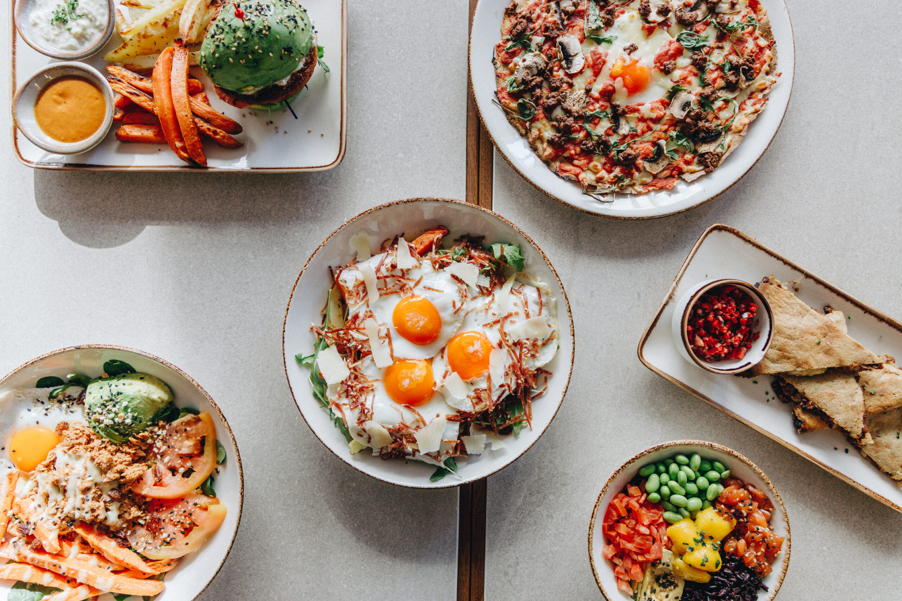
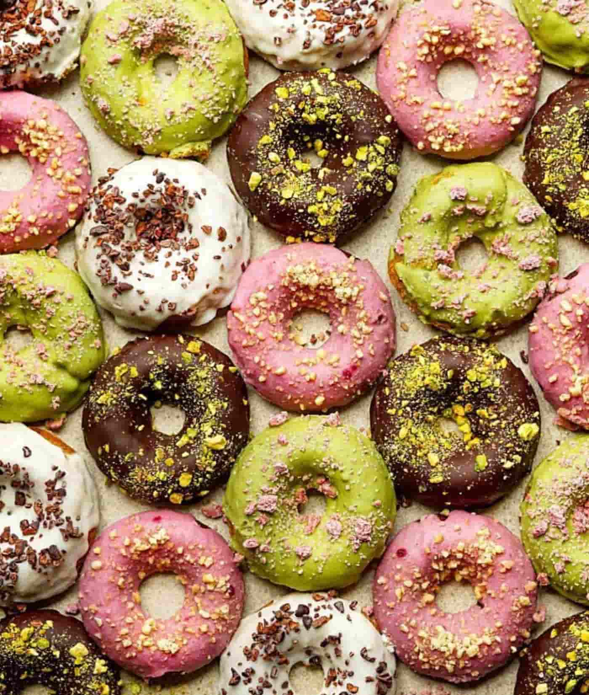
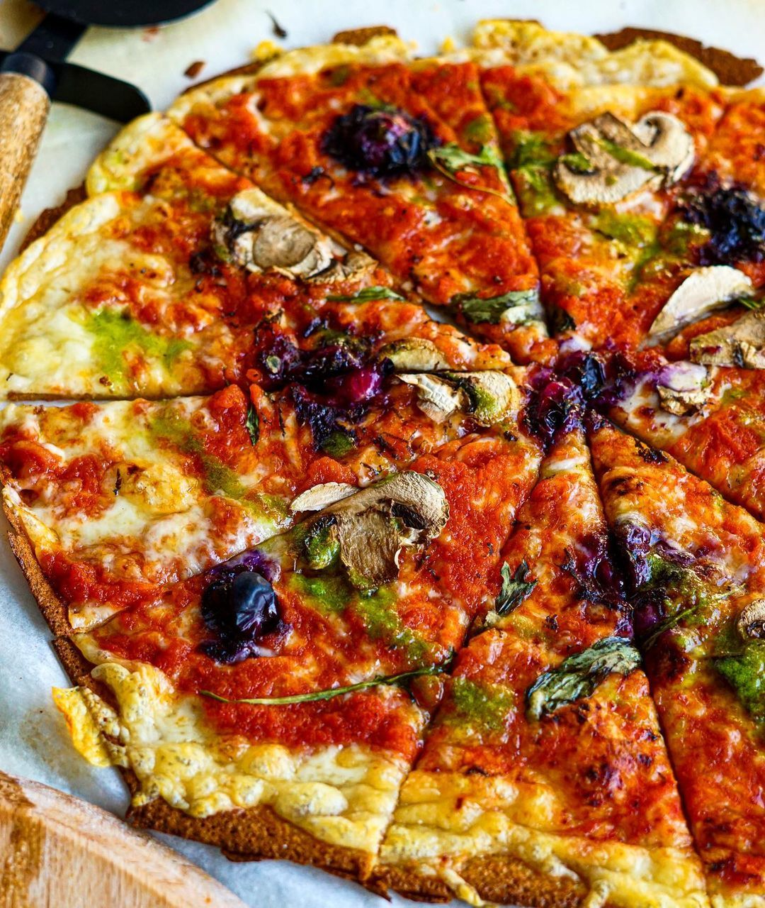

Naked & Sated
Naked & Sated es uno de los mejores restaurantes healthy de Madrid donde puedes
comer sin remordimientos. Por eso apuestan por platos elaborados con productos frescos, sostenibles, de proximidad y sin aditivos. En su carta, no vas encontrar ni productos ultra procesados, nada de harinas o azúcares refinados, con el objetivo de ofrecer comidas saludables.
La carta de Naked & Sated es súper amplia y está dividida en 10 apartados, que van desde galettes, a tostas pasando por bowls, pizzas, burgers o ensaladas, cada uno de ellos con numerosas opciones. El responsable de la cocina es el chef Roberto Bosquet y algunos de los platos que ya se han convertido en las estrellas de la carta son la ensalada de tataki, con atún a la plancha, quinoa, aguacate, garbanzos cocidos, tomate y pimiento de piquillo, o los huevos rotos saludables, que se hacen con huevos ecológicos a la plancha con las patatas y boniato al horno, y jamón ibérico.
Dirección: Calle de Serrano, 110, 28006 Madrid
Cocina: Mediterránea
Precio medio: 30€


